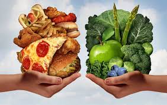

READING
READING
Read the next text and pay attention to the phrases that are used with countable and noncountable nouns.
“ health alert”
a lot of people these days suffer from a dangerous addiction to junk food. the definition of junk food is food that is not healthy because it contains a lot of grease, salt, and sugar. how many bags of chips do you eat every week? how much candy do you eat? many people today eat fewer vegetables, less meat, and more snack foods than before, the result is few people that are healthy!
